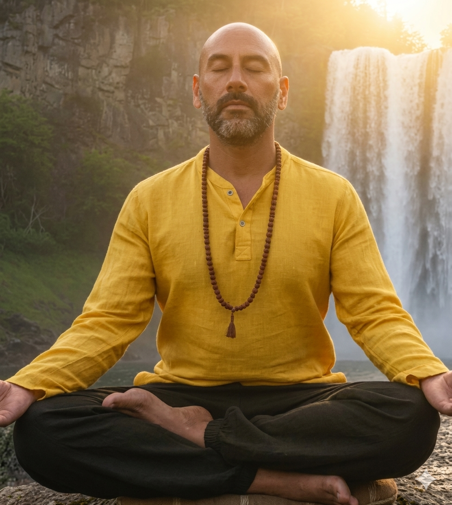

Autoliderazgo y Maestría Interior
Programa de Transformación · 90 Días
Para empresarios, altos cargos y profesionales que alcanzaron el éxito externo… pero sienten que algo esencial sigue faltando. Un entrenamiento de 90 días para superar la crisis identitaria, restablecer la coherencia de tu tríada mente–emoción–cuerpo y asumir el control total de tu vida.

¿Te resuena esto?
Construiste todo lo que se supone que debía hacerte feliz: la empresa, el reconocimiento, los ingresos. Y aun así, al final del día, cuando el ruido se detiene, aparece esa sensación de que algo esencial falta.
Intentas taparla con juntas, con alcohol o distrayéndote en redes sociales. Pero apenas vuelves a estar contigo mismo, la sensación de vacío sigue estando.
Esto no es una crisis. Es una invitación a tu siguiente nivel de identidad.
"Sé lo que es sentir la culpa del éxito, alcanzar lo que todos quieren y sentirse vacío. Solo, a pesar de estar acompañado. Ahí fue cuando tomé la decisión de cambiar mi vida por completo — y de esa transformación nació Autoliderazgo."— Daniel Miccael Sais
El Método
Un entrenamiento sistémico que trabaja tu tríada mente–emoción–acción a través de 4 ciclos progresivos. Porque es imposible dirigir un equipo o empresa sin ser capaz de dirigirte a ti mismo.
Comprender el Miedo — Tu guardián natural, no tu enemigo
Identificar el Mensaje — Desarmar las mentiras internas y la voz del niño interior
Hacer las Paces — Transformar la resistencia en una alianza de poder útil
La Acción Suprema — Siente el miedo, aumenta tu competencia y actúa igual
La Mente Creadora — Todo comienza en la mente: lo que sostengo, lo vivo
Las Leyes Mentales Inmutables — Correspondencia, Convicción y Gestación
El Pensamiento Controlado — Eliminar la reacción automática y elegir con claridad
Autocontrol y Calma Mental — La meditación profunda como llave al subconsciente
La Emoción como Combustible — Alineación entre el cerebro y el corazón
El Mapa del Sentir — Cerrar heridas del alma sin revivir el dolor
Liberación de Patrones — Cortar los hilos de la herencia familiar de escasez y miedo
Del Dolor al Propósito — Configuración de la Certeza Emocional permanente
La Amalgama de la Tríada — Integración de mente, emoción y acción en un solo cuerpo
La Consagración Suprema — Gala final de graduación y Ritual de Declaración de Identidad
Evaluación de metas, balance de la brújula de autoliderazgo e instalación permanente en el Modo Creador Consciente
Qué incluye
Módulos y lecciones estructuradas por ciclo que se adaptan a tu ritmo y agenda. Acceso inmediato desde el día 1.
Miércoles (Clase Máster) y Sábados (Mentoría de Calibración) a las 20:00 hrs Chile durante los 90 días.
Bitácora en PDF de uso diario para registrar avances, aplicar la Sustitución Activa y asentar las evidencias de coherencia.
Conexión diaria a las 06:30 hrs con la práctica de Vive Meditación y una Frase Poderosa para sostener el enfoque del día.
Acceso a una tribu privada de líderes en tu misma sintonía. Ecosistema de calibración, rendición de cuentas y apoyo mutuo.
Mensajes diarios (máx. 2 min) que impulsan al participante a tomar decisiones conscientes y mantener el centramiento biológico.
Calendario Premium
El programa incluye 26 encuentros en vivo diseñados bajo una lógica de alta dirección. No son clases teóricas: son espacios de ingeniería mental, mentoría directa y rendición de cuentas ante la Tribu.
Entrega conceptual profunda, pautas técnicas y apertura del enfoque semanal. Cada clase lleva al participante un paso más profundo en su proceso.
Mentoría directa, revisión del Diario de Progreso, rendición de cuentas y blindaje de la Tribu. Aquí se calibra el avance real del autoliderazgo.
Gran gala final de graduación. Ritual colectivo de Declaración de Identidad y firma del Contrato de Maestría Interna.
Sobre Daniel
Hace unos años, Daniel lideraba su equipo y tenía todo lo que debería hacerlo feliz. Pero no lo era. Alcanzó lo que todos quieren y se sintió vacío. Solo, a pesar de estar acompañado.
De esa transformación personal nació Autoliderazgo: la convicción de que para que tu vida esté completa y en plenitud, se necesita el mismo liderazgo que ocupas en tu empresa, aplicado con la misma fuerza a tu propia vida.
Hoy, Daniel acompaña a empresarios y líderes a superar la crisis identitaria con un método que une neurociencia aplicada, psicología analítica, PNL y meditación profunda.
Cómo funciona
Conoce en detalle el programa, su estructura y metodología. Esta página está diseñada para que llegues a tu reunión con total claridad sobre de qué se trata el proceso.
Una conversación de 15 a 30 minutos con Daniel para conocer tu situación actual. Si el programa es para ti, lo sabrás. Si no, Daniel te lo dirá con total honestidad.
Iniciamos el proceso: 26 encuentros en vivo, diario de progreso, desafíos diarios y acompañamiento continuo para convertirte en un Creador Consciente.
Voces del Programa
Jorge
"Transformé el miedo en mi mayor aliado"
Mónica
"Aprendí a perseguir mis metas sin que el fracaso me detenga"
Guadalupe
"La meditación me devolvió la paz que no sabía que había perdido"
Marcela
"Hoy comprendo mis emociones y las habito desde otro lugar"
Participante del programa
"Descubrí mis miedos más profundos y recuperé el control de mi vida"
No necesitas seguir sufriendo para merecer la transformación. El trabajo interno correcto puede cambiar tu vida en 90 días. La pregunta no es si puedes. La pregunta es: ¿estás listo?